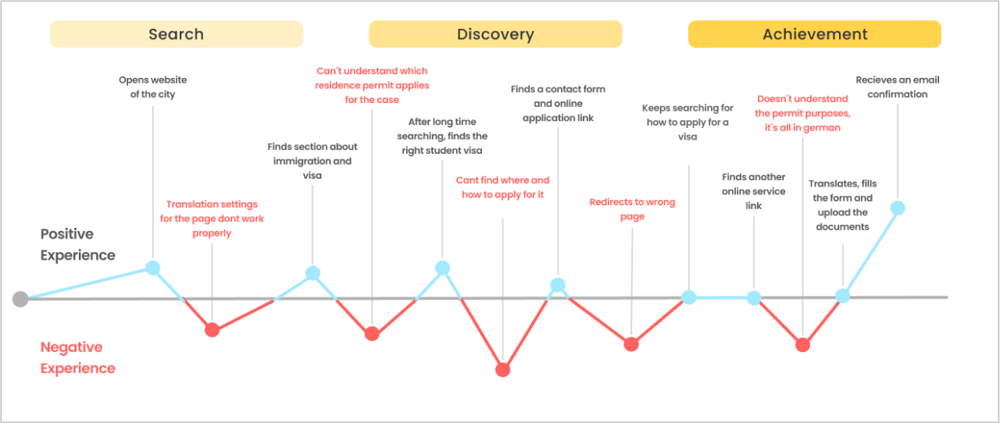
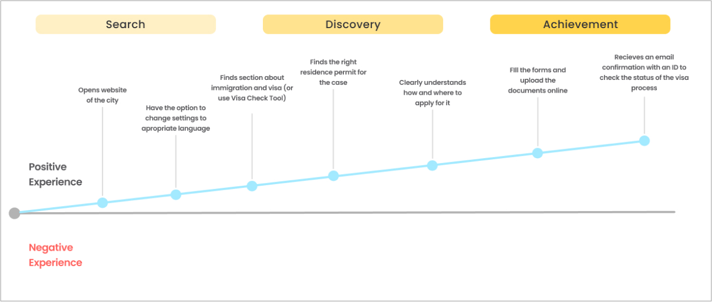
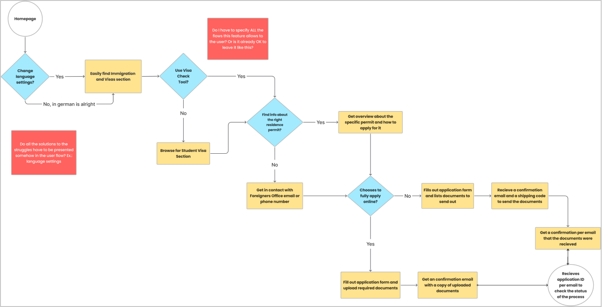

UX Redesign: Visa Application
OVERVIEW
The Visa Application Redesign project aimed to improve the user experience for students applying for visas in Munich by leveraging the Double Diamond Process. Through iterative design iterations and a user-centric approach, the project sought to identify pain points and opportunities for enhancement within the existing system, ultimately delivering a transformative solution with a more efficient and streamlined application experience.
By understanding the unique needs and challenges faced by student visa applicants, the project sought to redesign the website system and architecture to better cater to their requirements. This involved optimizing navigation, improving information accessibility, and enhancing user support mechanisms.
METHODOLOGIES & TOOLS
Double Diamond Process, User Interviews, Figma, Notion, Desk Research, Usability Heuristics, Elaboration of Key Findings, Problems, User Flows and User Journeys
DURATION January 2022 - August 2022
The project
DISCOVER PHASE
The user
The primary users of this platform are immigrants arriving in Munich with diverse objectives, such as pursuing higher education at the university, attending language courses to learn German, or transitioning to new job opportunities. These individuals typically navigate the bureaucratic processes independently to obtain the necessary residence permits for their stay in Germany. For the purpose of this project, I have chosen to focus specifically on the visa application process for students aiming to study in Munich.
The research
Desk-Research indicates that Munich boasts a diverse population, with non-nationals constituting approximately 23% of its inhabitants, while first and second-generation migrants make up 3.20% of the city's residents. Moreover, the majority group comprises 64% of Munich's population.
Throughout my nearly two-year-long collaboration with immigrants, particularly those undertaking language courses to learn German and apply for visas, it became apparent that they face significant challenges in comprehending and navigating the visa application process.
User Journey
In addition to my research efforts, I conducted user interviews to pinpoint specific issues faced by visa applicants and curated online user reviews to understand the primary concerns surrounding the visa application process.
The users encountered several challenges while navigating the website of the foreigners office for their visa application process. Initially, they struggled to locate relevant information and resorted to contacting the office directly via email and phone. Despite finding information about the visa process, users faced difficulties in booking appointments and completing registration due to unclear website navigation.
One significant issue mentioned was the lack of direct links to important registration pages, forcing them to use external search engines like Google to find the necessary information. Additionally, they encountered language barriers as all the information on the registration page was in German, making it challenging for non-native speakers to understand the process fully.
Furthermore, attempts to access the online visa application led to irrelevant pages, adding to users' frustration and confusion.
- These challenges highlighted several key issues with the website of the foreigners office:
- 1. Complex and unintuitive website navigation: The lack of direct links and unclear organization made it difficult for users to locate essential information and services.
- 2. Language barriers: The website primarily presented information in German, posing difficulties for non-native speakers seeking to understand the visa application process.
- 3. Lack of clear instructions and support: Users struggled to find clear instructions and support within the website interface, leading to frustration and confusion.
As part of the research, benchmarking was conducted to understand how other cities and countries manage their visa processes, particularly in terms of digitalization. Research was conducted on countries like New Zealand and cities like Sydney to gather insights and best practices in visa processing.
Benchmarking
DEFINE PHASE
After compiling all of these findings and gathering insights and best practices, I developed a new user journey. This journey serves as the foundation for the next design flows, aimed at enhancing the overall user experience. The goal is to guide users seamlessly through the search, discovery, and achievement phases with as few negative experiences as possible.
New User Journey
User Flow
DEVELOP/DELIVER PHASE
- To address the identified struggles and improve the user experience, several solutions were integrated into the user flow:
- 1. Homepage: The user journey begins with the homepage, where users can easily find the Immigration and Visas section.
- 2. Language Settings: Users have the option to change the language settings to their preferred language, ensuring accessibility for non-native speakers.
- 3. Visa Information: Upon selecting the Visa option, users are directed to find information about specific residence permits and how to apply for them.
- 4. Browse for Student Visa: Users can browse for the Student Visa section to access relevant information tailored to their needs.
- 5. Contact Foreigners Office: Users have the option to get in touch with the Foreigners Office via email or phone for further assistance.
- 6. Online Application: Users can choose to apply fully online, where they fill out the application form and upload required documents.
- 7. Confirmation Process: Upon completing the online application, users receive a confirmation email with a copy of the uploaded documents. Users who opt to send documents by post receive a confirmation email with a shipping code to track their documents. Once the documents are received, users receive a confirmation email, along with an application ID to check the status of their application process.
User Flow Prototype
More Projects